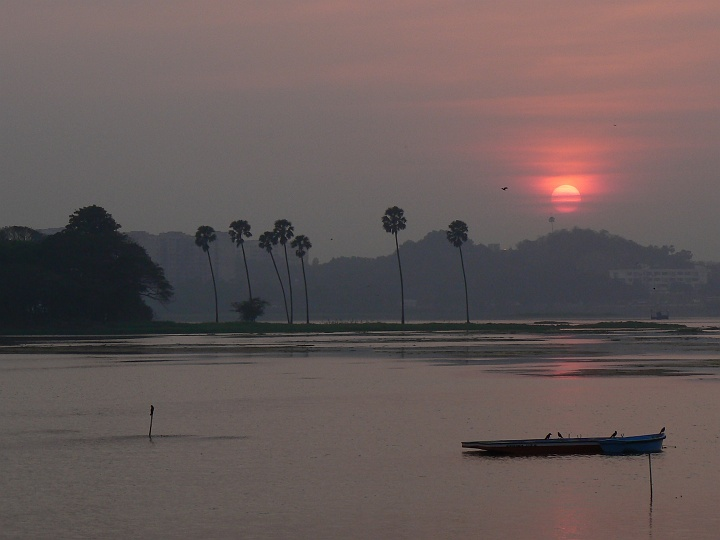
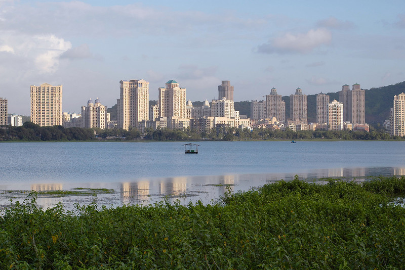
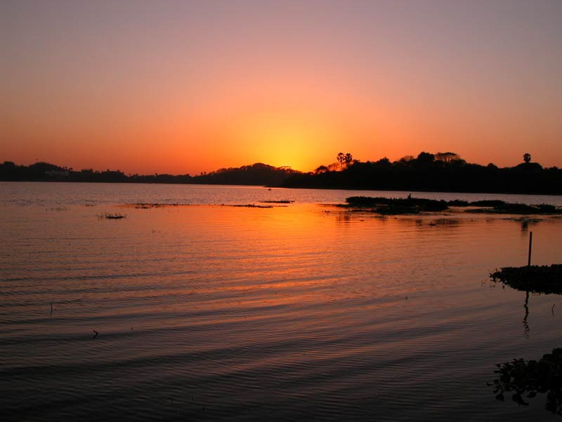
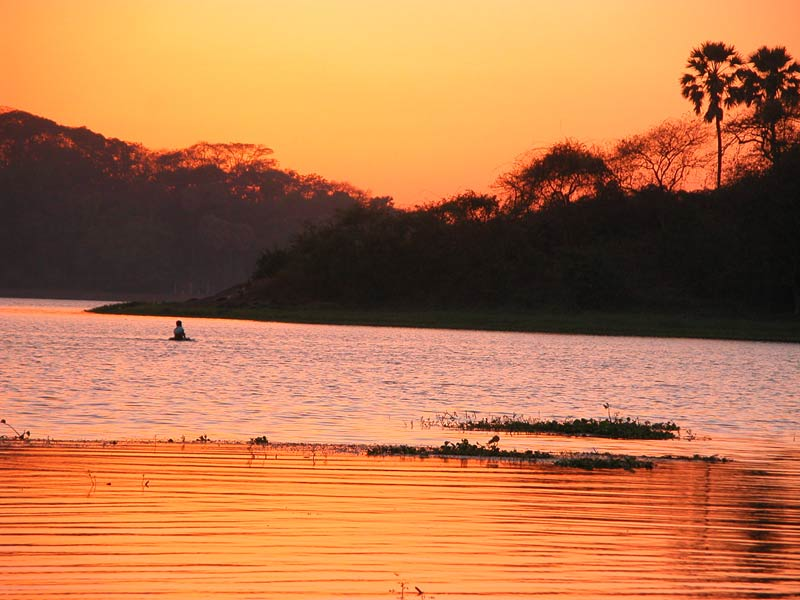

Every community has its own lake or river or sea shore that provides life support to all living forms in the given urban eco-system. Unfortunately, most of the lakes are contaminated to the extent that their dying process has begun.
One such lake is the Powai Lake. We derive our suburb's name from it.
The Grand Challenge to rejuvenate Powai Lake is an opportunity to be a part of a completely student driven technical project with guidance from institute faculty.